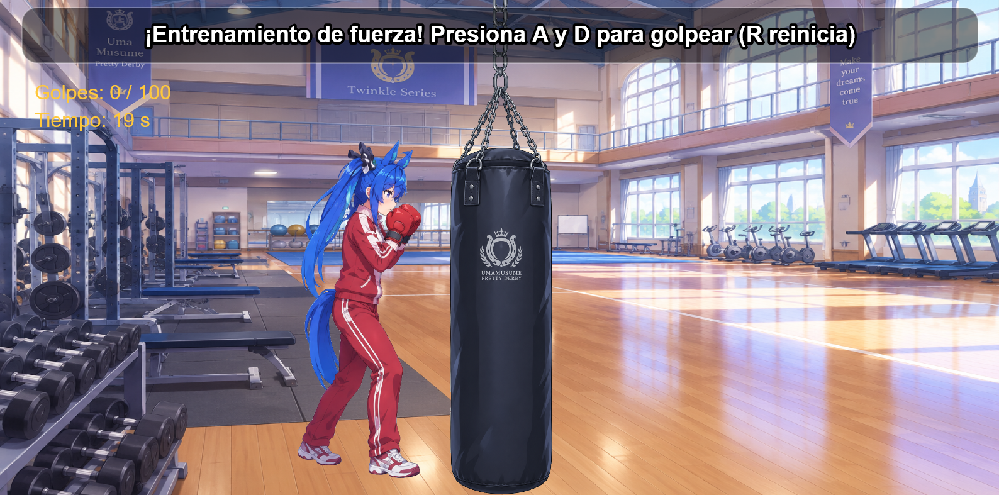

La temática
Elegimos la tematica en base a un juego bastante famoso conocido como Uma Musume Pretty Dervi, el cual tiene tambien una adaptacion al anime, enfocandonos principalmente en una de sus personajes y su trama, Twin Turbo la cual busca cumplir su promesa con Tokai Teio y demostrarle q aun puede seguir corriendo, en nuestra aventura interactiva planteamos varios finales posibles para la historia de Turbo, puede fracasar y perder la carrera, triunfar logrando la victoria o no solo triunfar sino que vemos el desarrollo inmediato de como Tokai compite en su propia carrera y gana. En esta pagina queremos mostrar el desarrollo de una de las pantallas de la aventura, en la cual Turbo debe elegir entre diferentes acciones para continuar la aventura, centrandonos especificamente en la elección "Entrenar fuerza y estamina", en esta propusimos que Turbo entrenara boxeo para elevar su fuerza y estamina.
A continuacion se podra observar el dicho minijuego de boxeo.

ScreenShot del minijuego.